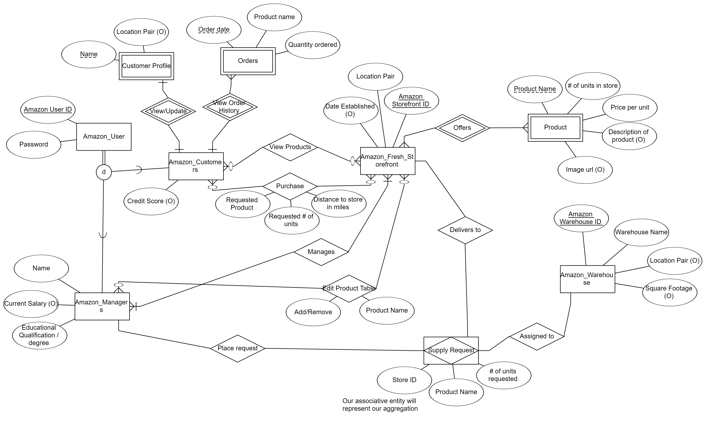
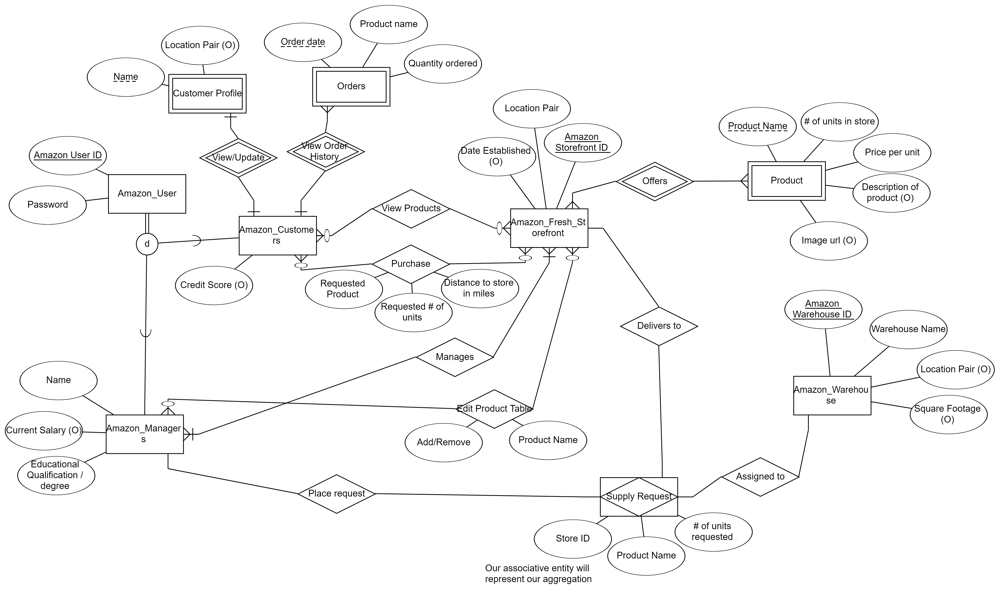

Kyle Russell
I am a student attending UCR, studying computer science with a passion for exploring the intersections of technology and social impact.
As a curious and driven person, I am repeatedly looking for new opportunities to expand my horizon of knowledge and skills in the field. My journet to computer
Science started when I was in high school. While basic, I learned how blocks of code in scratch could allow objects and images on the screen to move. This propelled
me to pursue a degree in Computational Mathematics at the University of California, Riverside, where I have been able to delve deeper into the different languages,
methods, and techniques used in computer science to build and optimize code.
One key aspect of my academic journey was much of my coursework that allowed me to build good fundamentals in coding. From the basics of coding in the CS10 series
to managing a database in CS166, each couse has given me valuable insights and skills.These courses have not only broadened my understanding of how technology impacts
society but have also inspired me to think critically about how I can use my skills to make a positive difference in the world.
Outside of my coursework, I have actively sought out opportunities to apply my skills in real-world settings. Participating in hackathons has been a particularly
rewarding experience for me. These events have not only allowed me to work on innovative projects but have also taught me the importance of collaboration, communication,
and quick problem-solving. This experience not only honed my technical skills but also showed me the potential of technology to address many important issues that
affect the real world.
I have also completed internships to gain practical experience in the field. One of my internships was at a software development company,
where I worked on a team to design and implement a new feature for their mobile application. This experience taught me valuable skills in software development
and project management, and it reinforced my passion for creating technology that has a positive impact on people's lives.
Additionally, outside of general classwork related to Computer Science, I also had participated in music and volunteer work. I have participated in marching band,
which I believe to be an important part in a balanced student schedule, as having both the exercize and the musical practice provides both a physical activity and
a fine art that a student also practices a little bit in the lower division requirements. For three days a week, the marching band I participated in would go outside
for three hours and practice the choreography and the piece that we learned so that we would fit into one cohesive unit. In terms of volunteer work, I have provided
essential aid to the skid row homeless in a school program in order to assist in fighting the homelessness problem that we currently have and has had for a while in California.
I believe it is very important for students tp volunteer so they can get a real life experience of the problems affecting us in the real world. It is easy to fall into the
hyper specific problems of any field, but volunteering can help maintain our connection with real world issues.
Experience
Tutor
• Helped students learn important material
• Discipline grading hundreds of packets
• Experience in teaching, speaking, and guiding students
Delivery Driver
• Responsible for travelling place to place to deliver food
• Gained important driving experience
Math Club
• Participated in Mathathons
• Practiced and maintained a good foundation in math
• Assisted students in understanding difficult math problems
Education
UC Riverside
Portfolio


